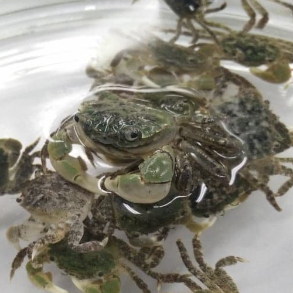

012020
Genomics Workflows on AWS
A cloud-based, serverless, and highly scalable workflow solution using AWS, Docker, and Nextflow. It allows users to run large-scale genomics analyses in parallel.
LEVEL 02.1 · SOFTWARE PROJECTS
Tools, apps, experiments, and a few things built along the way.
A cloud-based, serverless, and highly scalable workflow solution using AWS, Docker, and Nextflow. It allows users to run large-scale genomics analyses in parallel.
A responsive personal website built with CSS, HTML, and JavaScript, with parallax scrolling and a collapsible navigation.
A Python game with reactive audio feedback and controls, built with a GUI using the Turtle library.
A team-built joke classifier trained with supervised learning on adapted web data, reaching roughly 86% accuracy.
An Android app for the London metro system in Java, displaying station information and live details responsive to the user’s location.
LEVEL 02.2 · RESEARCH PROJECTS
Research projects exploring biology, genetics, and the natural world.
An experiment on how temperature affects oxygen production in Chlamydomonas reinhardtii and, in turn, salmon populations. Designed from literature research and carried out using sterile techniques; no significant difference was found.
A hypothetical experiment designed through conventional research methods. Molecular biology techniques and data generated with R supported a presentation at the 2018 Multidisciplinary Undergraduate Research Conference.
An observational study of beverage temperature preference and gender at multiple Starbucks locations on the UBC Vancouver campus. Statistical analysis found no correlation.

A controlled experiment on how environmental temperature affects the movement of Hemigrapsus oregonensis. Findings supported the hypothesis that temperature affects this species’ movement.
Identified an unknown mutated gene and the source of its phenotype using GenBank, BLAST, and ExPASy.